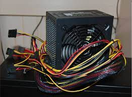

Power Supply Unit
The power supply unit (PSU) is a critical component in a computer system that provides electrical power to all the other components. It converts the alternating current (AC) from the wall outlet into direct current (DC) that can be used by the various hardware components, ensuring reliable and efficient power delivery.
What is a Power Supply Unit?
A power supply unit, also known as a PSU or power supply, is a self-contained component that converts alternating current (AC) from the mains electricity to the lower-voltage direct current (DC) required by the computer's internal components. It supplies the necessary power to the motherboard, processor, graphics card, storage devices, and other peripherals.

Key Components of a Power Supply Unit
A typical power supply unit consists of several essential components, including:
- Transformer: The transformer is responsible for stepping down the high-voltage AC from the mains to a lower AC voltage suitable for the power supply's internal circuitry.
- Rectifier: The rectifier converts the low-voltage AC from the transformer into direct current (DC).
- Filter: The filter smooths out the pulsating DC output from the rectifier to provide a more stable and consistent DC voltage.
- Voltage Regulator: The voltage regulator ensures that the output voltages (e.g., +3.3V, +5V, +12V) remain within the required specifications, even as the load on the power supply varies.
- Cooling Fan: A cooling fan helps dissipate heat generated by the power supply's internal components, ensuring efficient and stable operation.
Power Supply Specifications
Power supply units are rated based on several key specifications, including:
- Wattage: The wattage rating indicates the maximum amount of power the PSU can provide to the components. Higher wattage PSUs can handle more power-hungry components like powerful graphics cards and multiple storage devices.
- Efficiency Rating: The efficiency rating (e.g., 80 PLUS, 80 PLUS Bronze, 80 PLUS Gold) indicates how efficiently the power supply converts AC to DC. Higher efficiency ratings mean less waste heat and lower electricity costs.
- Connectors: Power supplies come with various connectors, such as ATX main power, PCIe (PCI Express), SATA (Serial ATA), and Molex, to provide power to different components.
- Form Factor: The form factor determines the physical size and shape of the power supply, ensuring compatibility with different computer cases (e.g., ATX, Micro-ATX, Mini-ITX).
Importance of Power Supply Units
The power supply unit is a crucial component in a computer system, as it provides the necessary electrical power to all the other components. A high-quality and reliable PSU ensures stable and consistent power delivery, which is essential for the proper functioning and longevity of the computer's hardware.
Choosing the right power supply unit is crucial when building or upgrading a computer system. It should have sufficient wattage to handle the power requirements of all the components, an appropriate efficiency rating to reduce energy costs, and the necessary connectors to support the various hardware components.